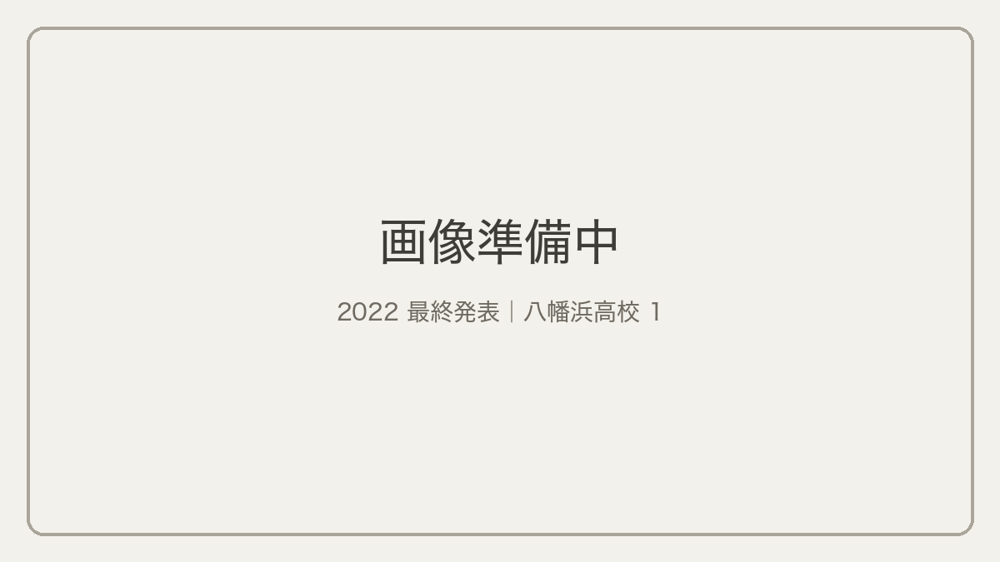
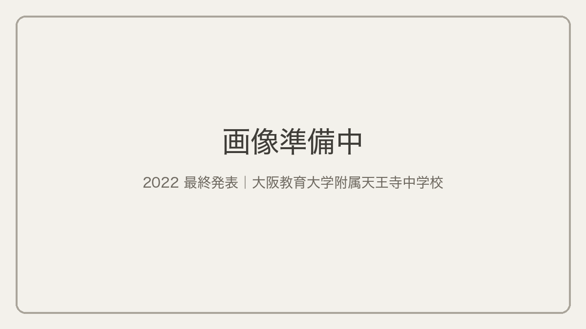
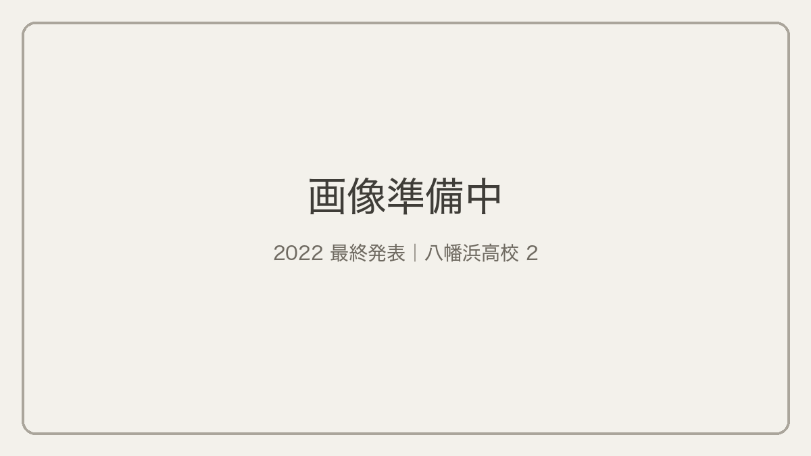
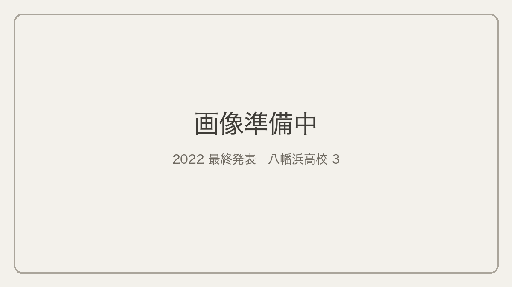
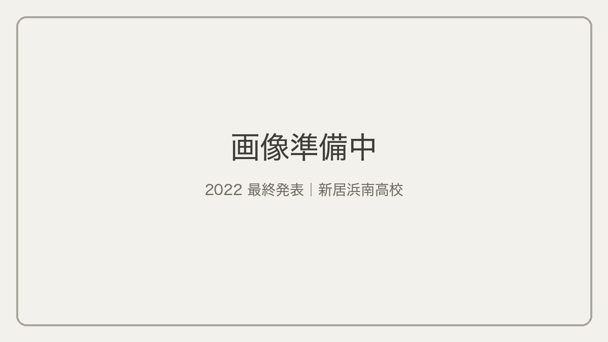
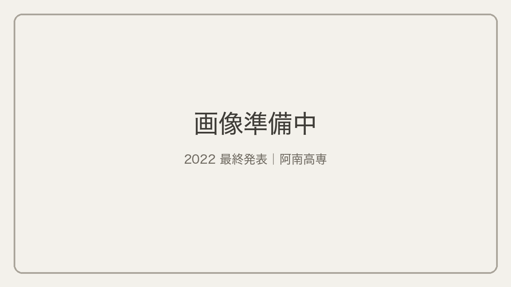
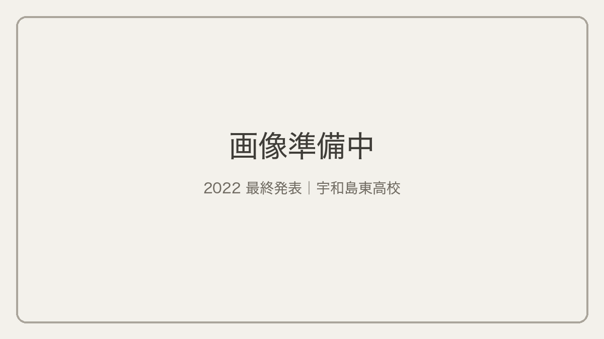
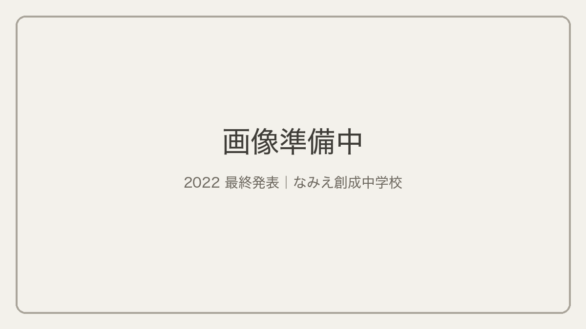
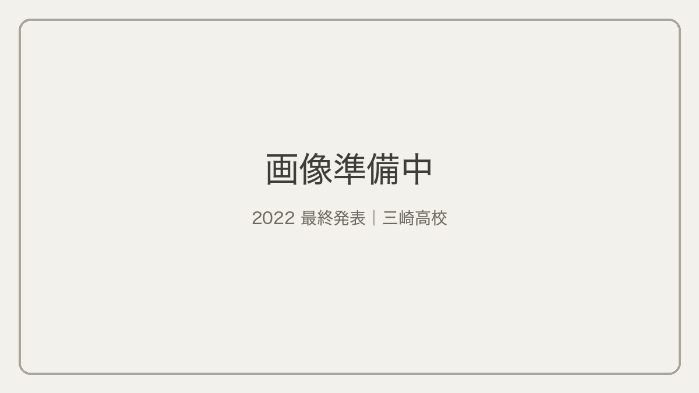

目次
最優秀賞 八幡浜高校 子どもが繋ぐ防災チーム

審査コメント 東京大学 羽藤 英二様
復興の提案やプランは単発で「やります」と言って終わりなことが多いですが、八幡浜高校はそれを毎年繰り返し継続してつなげていく取り組みの姿勢が素晴らしいと思います。 私は専門家なので地域に入ったときについつい自分の持っている知識であれこれ提案したくなりますが、地元にいて地元のことを考え続けることにこんな可能性があるんだと感じさせてくれる発表でした。 阪神淡路大震災のときに、ボランティアで神戸に入った経験がありますが、頼まれたのはお寺に避難した人への料理作りでした。 温かい美味しい食というのが普通の人からすると非常に重要な要素で、住民の目線で大切なことを見出しているのが素晴らしかったです。パスタソースもぜひ食べたいです。 防災を考える際に、いろいろな立場から考え、繋いでいくことの重要性に気付かされました。
構想賞 浜松工業高校
審査コメント 東京都立大学 益子 智之様
復興デザインにおける将来像の持つ力強さを再認識させる力作であった。廃校を地域防災センターへ転用させるイメージを軽やかなタッチで描写し、地域の人々での団欒の様子や養殖したうなぎの蒲焼販売の風景を見事に想起させ、新たな生活文化の創造に寄与することは間違いありません。人口と廃校の傾向分析と廃校地区周辺の災害リスク調査は、将来像を説得力のあるものとするために、大変効果的でした。また、デザインの作法としては、耐震構造とひとびとの振る舞いを掛け合わせたボックスの挿入が採用されていた。この作法を”足し算によるデザイン”とするならば、今後提案をブラッシュアップするために”引き算によるデザイン”を取り入れても良いのではないか。機能のない余白をつくることも大切ですし、床を二層抜くことでボルダリング空間になるかもしれません。今後の活動に期待しています。
目から鱗賞 大阪教育大学附属天王寺中学校

審査コメント アジア航測株式会社 牧 澄枝様
鉄道愛にあふれつつ、調査・分析もしっかり実施された、とても分かりやすいご発表でした。鉄道が大好きで普段からよく観察しておられるのであろう印象を受けましたが、それを避難所利用に結びつけた点が素晴らしいと感じました。 想定されるリスク、駅や天王寺区の状況調査から分析を経て、目的を「帰宅困難者の避難所確保」と設定されたことは、説得力がありました。計画では、避難所運営の課題となる水、トイレ、電話、プライバシー確保が可能であるとのご指摘があり、駅を含む電車の、避難所としての親和性に「目から鱗」でした。 色々とハードルはあると思いますが、鉄道会社と地域が協力して、ぜひ実現して欲しいと思うご提案でした。
未来賞 八幡浜高校文化財チーム

審査コメント 復建調査設計 川上 佐知様
文化財は生活のすぐ近くにあるので、当たり前すぎて考えが及ばないものですが、ぜひ深く考えて未来に繋いで行ってほしいです。 自然災害だけでなくコロナにより祭りができなくなっている地域もあるので、そういった無形の文化財を継いでいくという方向に発展の可能性も感じる発表でした。
継賞 八幡浜高校企業連携チーム

審査コメント 名古屋工業大学 中居 楓子様
まず，石垣の段々畑による柑橘栽培，という地域に根ざした話が出てきたところで「おっ」と目を引きました．「地域にとって大事なもの」を見極めることは，地域を過去，今，未来へと「継」ぐうえで重要だと思うのですが，それを高校生の皆さんがはっきりと語れるということが素晴らしいと思いました．また，自分たちの地域だけで見ると被災という経験はめったにないので，その教訓を「継」ぐことは難しいですが，熊本地震の石垣修復という他地域の教訓を「継」いで，自分たちの地域で活かすという発想も良いと感じました．垂直軸（地域の歴史）と水平軸（他地域の知見）をうまく継承する点が印象的だったので「継賞」とさせていただきました．
伝賞 新居浜南高校

審査コメント 国土交通省 菊池 雅彦様
新居浜南高校防災地理部では、これまで、地域の歴史を探りながら、住民の防災意識を高める取り組みを継続的に行っています。今年は、民話や伝承の中から災害を訴えかけているものがないかを探究し、それを伝えることに取り組んでくれました。活動の中では、新居浜市で起きた平成１６年の水害や、新居浜市の民話の聞き取り、さらに昔話と災害の起こった場所の関連性等の探究活動を丁寧に行っています。そのうえで、民話の動画作成を行い、今後、地域の子供達に災害に関わる場所で民話の紙芝居を披露するという、具体的な提案を行っています。これらの高校生の活動によって、地域の防災意識が向上していくことを期待させる活動の発表でした。
阿南工業高等専門学校

コメント 東京大学 浦田 淳司様
非常に丁寧に現地の状況を整理した上で，プランの下敷きを作っており，今後への期待が高まりました．地域の伝統行事のことも考えながら提案することは，地元の学校でなければなかなかできないと思いますので，非常に貴重だと思います．また，高台移転はなかなか難しいプロジェクトです．実際に移転を進めるときに，どんな問題があるのか，どうすれば乗り越えられるのか，地域に入り込んで考えていってください．期待しています．
宇和島東高校

審査コメント 東京大学 萩原 拓也様
避難所ごとの違いを比較しながら、避難所生活の改善に向けて、丁寧に調査と検討をしていて充実した発表をありがとうございます。宇和島東高校は、高校生の皆さん自身がいること、関わることができることが特徴（メリット）だと思います。そうしたことも踏まえて今後の活動につなげていただければと思いました。
なみえ創成中学校

審査コメント 東京大学 増田 慧樹様
小学生が外に出て浪江の自然・人・まちと触れ合う機会がなかなかない、浪江を故郷と思い愛着を醸成する機会が少ないことを、以前浪江の役場の方からお聞きしました。 愛媛・徳島・大阪・浜松の中高生が示してくれていることは、復興・事前復興の現場において地元のために継続して考え続ける重要性と、それができるのが地元の住民しかいないということだと思います。 浪江で「人を通じてまちの魅力を知る」という活動が、浪江の復興を継続して考える人（中学生）の成長に貢献していると、及川さんの美容室のエピソードを通じて感じられ、非常に意義深い活動だと思いました。
三崎高校

審査コメント 愛媛大学 山本 浩司様
W杯で日本がドイツに勝ったのは長年の活動の蓄積の結果。一つはサッカーの競技人口を増やしてきた。それぞれのまちにサッカークラブを作って子供にサッカーを教えてきたのが、数十年して結実した。 防災地理部を立ち上げたのも同じ発想で、それぞれに地域に地域のことを考える若者を育てることを目標としている。 三崎高校も宇和島東高校も、個人個人の防災力だけでなく、活動を通して地域の防災力を高めている点に大きな価値がある。